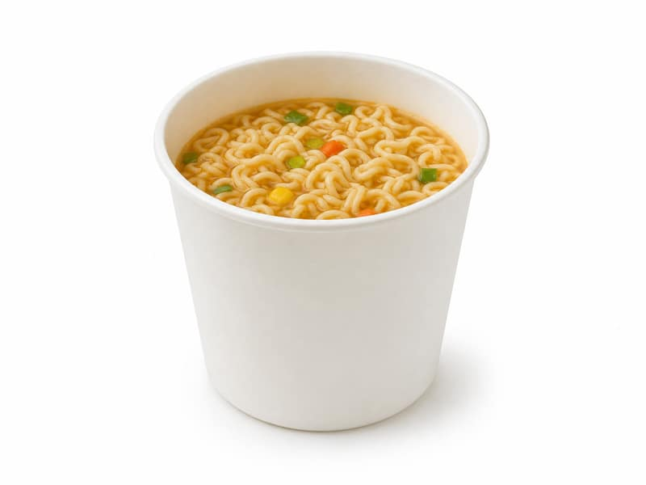

Zupy
Ramen instant (zupka)
Ramen instant (zupka): 9 g białka, 450 kcal, 65 g węglowodanów i 17 g tłuszczu na 100 g. Kategoria: Zupy.
Kalorie450 kcalna 100 g
Białko / proteiny9 g
Węglowodany65 g
Tłuszcz17 g
Cena (szac.)~1,38 złza 100 g
Ceny zaktualizowano: maj 2026 (szacunek — ceny w popularnych supermarketach)
Porcja: kubek (65g)
| Kalorie | 293 kcal |
|---|---|
| Białko | 5.9 g |
| Węglowodany | 42.3 g |
| Tłuszcz | 11.1 g |
| Cena (szac.) | ~0,90 zł |
Szczegółowe składniki odżywcze na 100 g
| Wartość energetyczna (kalorie) | 450 kcal |
|---|---|
| Białko (proteiny) | 9 g |
| Węglowodany | 65 g |
| Tłuszcz | 17 g |
| Tłuszcze nasycone | 8 g |
| Tłuszcze nienasycone | 9 g |
| Witaminy i minerały | Sód, Potas, Witamina C |
| Współczynnik kcal / 1 g białka | 50.0 |
| Cena produktu (szac. za 100 g) | ~1,38 zł |
| Cena za 100 g białka (szac.) | ~15,38 zł |